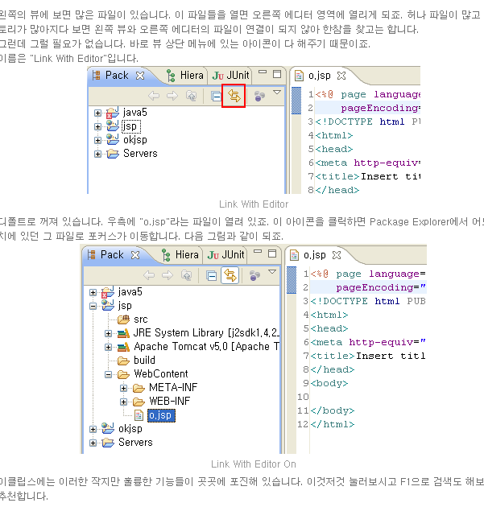

소스 가져오기
git clone https://github.com/gpresss/web

모든 바뀐 소스 올릴 준비
git add .

메모
git commit -m "20210525"

master 가지치기로 소스 올리기
git push origin master


소스 변경이 많아도 강제로 올리기
-f force의 줄임말
git push -f origin master

ctrl + h 모든 소스 검색

